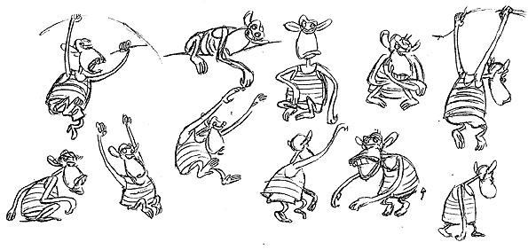
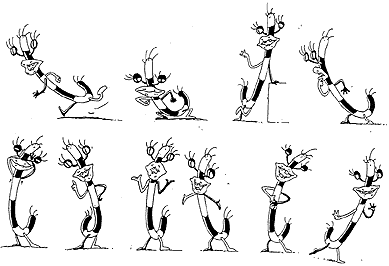

PART FOUR:
MOVEMENT SKETCHES

Once you have learned to draw a character from every angle, the next step is to try drawing the character doing different things and showing movement.
This is one of the key elements in successful animation: if the artist can show emotion and natural flexibility in their drawings of the figures, there is little doubt this will translate well when the animation is complete.

Movement sketches also help the animators get an idea how the various positions and expressions of the characters change with each transition.